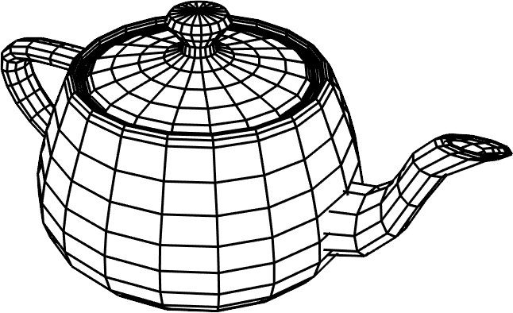

The Normal Vector
This vector $\V{n}$ will be perpendicular to the triangle at all points.

\[\V{n}=\frac{\V{n}}{\|\V{n}\|}\]
The vector $\V{n}$ must be normalized yet again because its length was scaled by the angle between $\V{a}$ and $\V{b}$. Such is the nature of the cross product.
With one normal for each face, the model looks faceted.
